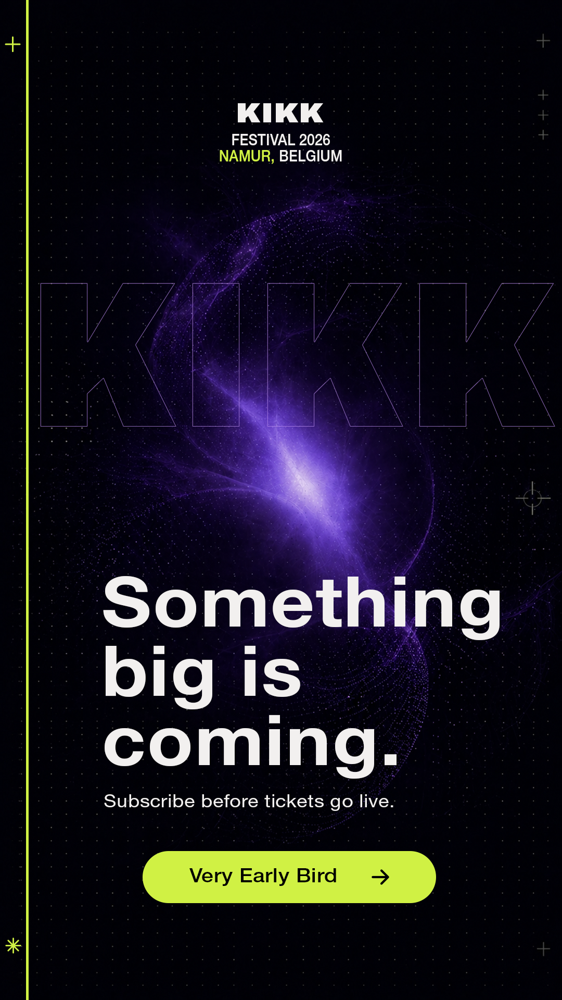
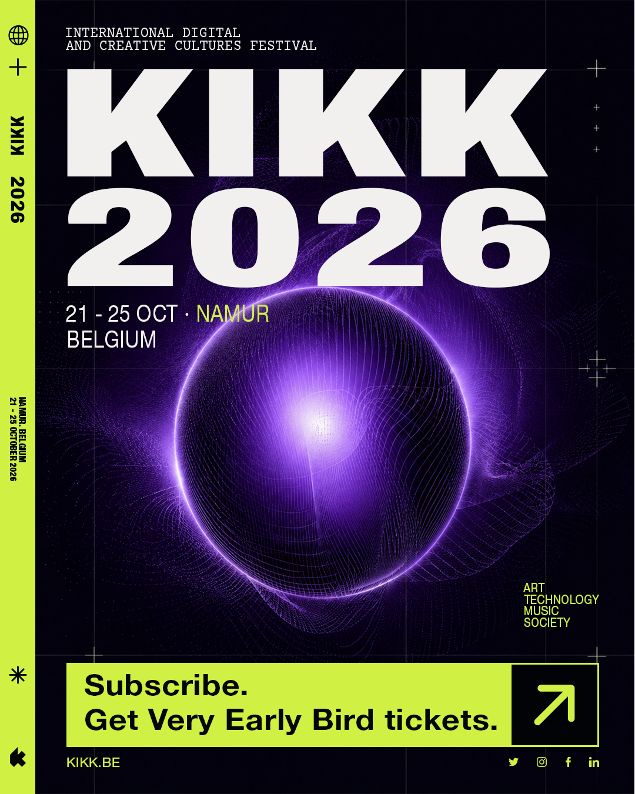
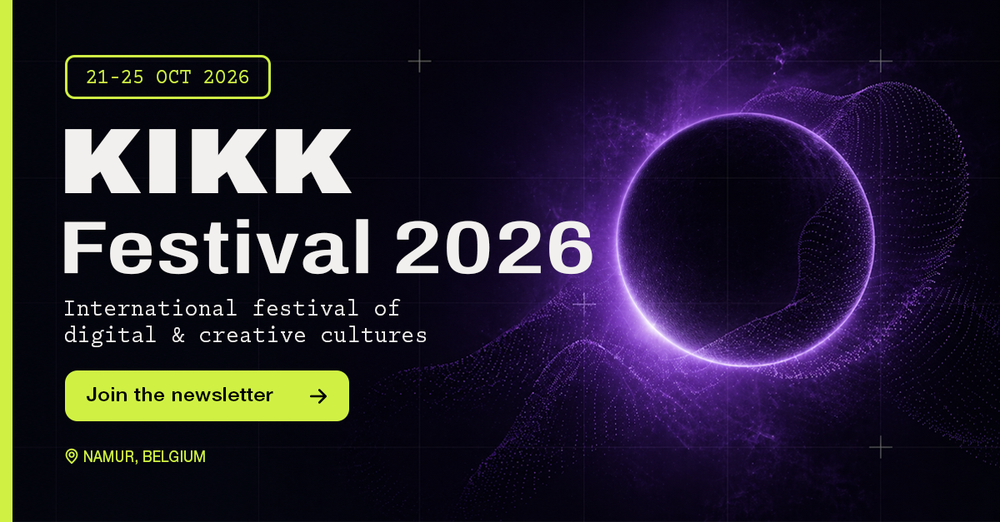

Project
Social Media Assets
Tools
Photoshop & Illustrator
Klant
KIKK Festival Namen
Doelgroep
Creatieve Professionals
01 — De Briefing
Het activeren van een creatieve community.
Voor het KIKK Festival 2026 in Namen lag er een specifieke uitdaging: de doelgroep overtuigen om zich in te schrijven voor de nieuwsbrief vóór de officiële ticketverkoop start. Het hoofddoel hiervan was om hen exclusieve toegang te bieden tot de gewilde 'Very Early Bird'-tickets.
02 — Strategie
Spreken tot de digital natives.
De doelgroep bestaat hoofdzakelijk uit designers, developers en creatieve strategen. De strategie achter deze campagne rust op drie fundamentele pijlers:
- Visuele synergie: Het design moet onmiddellijk herkenbaar zijn als 'KIKK', gebruikmakend van een gedurfde en experimentele visuele identiteit.
- Urgentie (FOMO): De nadruk ligt op de 'Very Early Bird'-status om een psychologisch voordeel voor de inschrijver te creëren.
- Platform-specifieke compositie: Voor elk platform is de lay-out vanaf de grond opgebouwd om de natuurlijke ooglijn te volgen.
03 — Techniek
Non-destructief en schaalbaar ontwerpen.
De technische realisatie vond volledig plaats binnen Adobe Photoshop. Er is gewerkt met één master-PSD bestand waarin de drie verschillende formaten als afzonderlijke artboards zijn ingericht. Alle complexe grafische elementen zijn ontworpen in Adobe Illustrator en als Smart Objects in Photoshop geïmporteerd om kwaliteitsverlies te voorkomen.
04 — Het Resultaat
Technisch geoptimaliseerd voor elk platform.
Hieronder vind je de definitieve uitwerking van de drie gevraagde social media assets, elk volledig afgestemd op de technische vereisten en kijkervaring van het specifieke kanaal.
Instagram Stories (1080 x 1920 px — 9:16)
Ontworpen voor een immersieve mobiele ervaring. Rekening gehouden met de 'safe zones' bovenaan (profielnaam) en onderaan (swipe up/reply balk).

Instagram Vertical Post (1080 x 1350 px — 4:5)
Neemt maximale schermruimte in de feed in. De belangrijkste typografie bevindt zich bovenaan zodat deze niet wegschiet achter de interface.

LinkedIn Landscape Post (1200 x 627 px — 1.91:1)
Een horizontale, 'editorial' lay-out speciaal voor de B2B omgeving. Typografie links (leesrichting), het abstracte beeld rechts ter balans.
